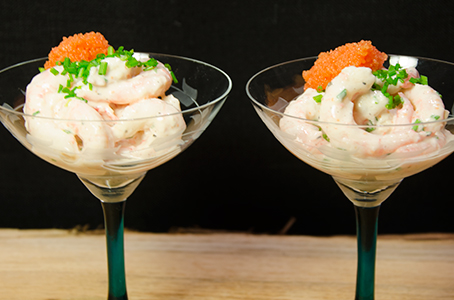

Räkröra serverat i glas

Ingredienser
1 kg frysta räkor med skal (ger ca 300 g skalade räkor)
1 dl lätt créme fraiche
1 msk riven pepparrot
1/2 tsk honung (går även bra med socker)
1 knippe gräslök (även till garnering)
1/4 citron
1/2 tsk dijonsenap
1 krm salt
1/2 krm nymald svartpeppar
Garnering: 50 g löjrom och gräslök
Tillagning
1. Låt räkorna rinna av och krama ut så mycket vätska som möjligt. Blanda créme fraiche, riven pepparrot, senap, honung och hackad gräslök.
2. Krydda med salt och peppar. Pressa 1/4 citron över.
Blanda i räkorna.
3. Fördela räkröran i glas. Toppa med löjrom.
Garnera med gräslök hackad gräslök.
Kan med fördel förberedas dagen före och förvaras i kylskåp.